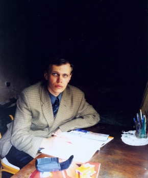
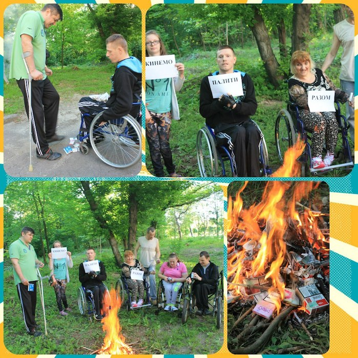
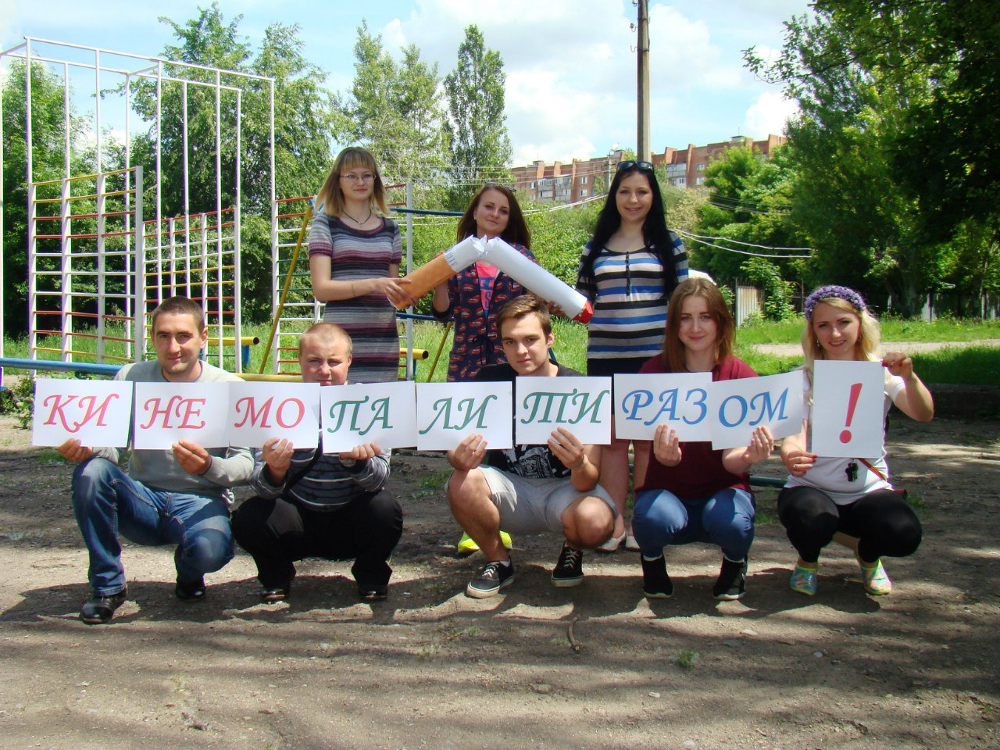
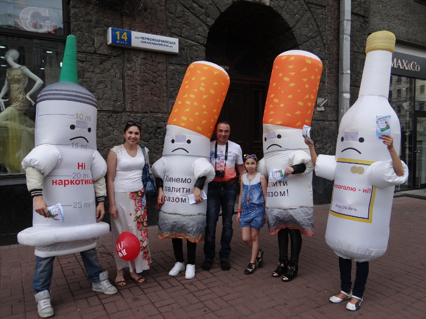

Общественная организация «Бросим курить вместе».
Общественная инициатива «Бросим курить вместе» начала свою работу в 2012 году вместе с публикацией книги Алексея Коваля в которой излагалась его авторская методика борьбы с никотиновой зависимостью «для трудных случаев», людей, потерявших всякую надежду.
Основной целью общественной организации является профилактика подросткового курения, алкоголизма, употребления наркотических препаратов, как среди взрослых так и детей, оказание помощи людям желающим расстаться с зависимостью. А так же - популяризация здорового образа жизни, усиление законодательной инициативы и контроля государства за соблюдением законодательства в сфере борьбы с курением.
В течение пяти лет мы вели активную работу по популяризации здорового образа жизни и оказания помощи всем слоям населения в борьбе с табачной, алкогольной и наркотической зависимостью в качестве общественной инициативы. Было проведено тысячи акций , десятки круглых столов, несколько туров по Украине по популяризации здорового образа жизни и отказа от никотиновой, алкогольной и наркотической зависимостей. Отчеты об этих мероприятиях вы сможете увидеть на нашем сайте www.quitsmokingtogether.ru
Более тысячи людей написали нам благодарность за эти годы. В 2017 году общественная организация была зарегистрирована для продуктивных изменений в сфере контроля над табаком в Украине на законодательном уровне и ведения международной деятельности.
Немного истории.
В 2012 году Алексей Коваль автор книги «Бросим курить вместе» опубликовал свои первые наработки в вопросе избавления от никотиновой зависимости.
Работа автора над книгой длилась более трех лет. Публиковались и распространялись в интернете первые главы. Общаясь с читателями и отвечая на вопросы людей, которые хотели бросить курить, автор усовершенствовал книгу, делая ее универсальной для всех типов зависимости. В 2012 году вышла в свет первая печатная редакция книги "Бросим курить вместе», а вместе с ней родилось общественное движение под лидерством автора книги Алексея Коваля, которая насчитывала к тому времени чуть более 300 человек во всех регионах Украины. 
По решению совета общественного движения, а также за счет средств автора и волонтеров-членов организации, во всех крупных городах Украины еженедельно начали проходить акции, посвященные борьбе с курением, алкоголем, употреблением наркотических средств. Бесплатно раздавались книги «Бросим курить вместе», диски с электронной копией книги, брошюры, листовки с адресом сайта общественной инициативы, ссылкой на бесплатное скачивание книги по авторской методике Алексея Коваля.
В обласных центрах Украины проходили тематические круглые столы. В более чем 40 городах поведены информационно-популяризирующих туры с целью максимальной популяризации среди украинцев здорового образа жизни и борьбы с зависимостями.
За несколько лет деятельности нашей общественной инициативы к нам присоединились тысячи людей с разных стран мира.
В 2014 количество друзей Алексея Коваля в социальной сети Facebook достигло максимальной цифры 5000 человек, а группы «Бросим курить вместе» в социальной сети «Вконтакте» насчитывала более 64 000 человек. Наши простые акции с использованием аэрокукол сигареты, бутылки и шприца всегда обращали на себя внимание людей, а текст брошюр и раздаваемых материалов заставлял более 10-15% людей прийти к мысли о необходимости бросить курить и употреблять алкоголь.
Популяризируя здоровый образ жизни и раздавая тысячами бесплатно электронные версии книги «Бросим курить вместе», мы помогли людям не только осознать проблему, но и помочь им перестать быть зависимыми. Нам постоянно писали люди с просьбами помочь и благодарностями за работу и за книгу автора которая не только помогла за эти годы тысячам украинцам, россиянам, белорусам, людям живущим в других странах бросить курить. Многие, читая ее, отказывались и от употребления алкоголя и даже наркотических препаратов.
Уникальная методика автора, основой которой является подготовка людей непосредственно к отказу от курения, сопровождает их в течение первых нескольких недель, помогая людям понять цену свободы, здоровья и многих лет жизни, которые они сохранят, расставшись с зависимостями.
Книга Алексея Коваля популярна на территории Украины и СНГ. Бескорыстность автора и его стремление помочь всем людям сделало ее доступной для бесплатного скачивания на многих ресурсах в интернете, она разошлась тиражом более чем 1 000 000 электронных копий по всему миру. Бумажные экземпляры книги находятся в государственных и частных библиотеках на территории Украины.
Настоящее и будущее
В настоящее время готовиться приложение книги на Андроид и IOS для еще более доступного восприятия изложенного в ней материала. Книга будет доступна в Google play и App Store совершенно бесплатно на трех языках – английский, русский и украинский. Готовяться переводы книги еще на 15 языков и если позволит финансирование эти переводы будут готовы к 2020 году.
Автор заканчивает работу над второй книгой по борьбе с глобальной проблемой-детским курением и алкоголизмом.
В августе 2017 года прошел съезд членов общественной инициативы, на котором было принято решение зарегистрировать международную общественную организацию «Бросим курить вместе». В сентябре 2017 года общественная организация была зарегистрирована в Министерстве Юстиции Украины как общественная некоммерческая организация.
На сегодняшний день представители общественной организации находятся в 8 областях Украины, ее члены проживают в 5 странах мира и насчитывают десятки тысяч человек.